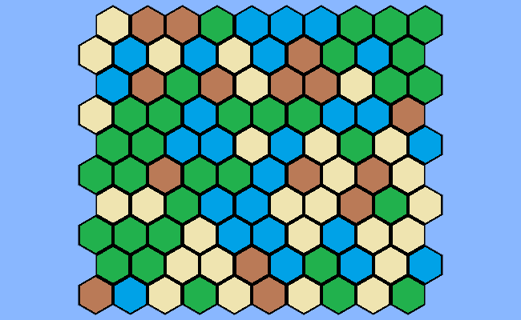

In this example we are going to create a HexMap with a rectangular shape and will assign a random value to each of those tiles . We will visualise this map in a very simple way by using one GameObject for each Tile using a Prefab. We then will add the HexMouse Component to get the position of the mouse and write a few lines which allow us to change the material of a hexagon when we click.
We create a new script and add the HexMapLibrary namespace:
using System.Collections.Generic;
Then we define the variables we need. We want to keep them private but we add the [SerializeField] attribute to some of them to be able to assign their values in the inspector.
[SerializeField] private GameObject hexPrefab = null;
[SerializeField] private GameObject tileMarker = null;
[SerializeField] private GameObject edgeMarker = null;
[SerializeField] private List<Material> materials = null
[SerializeField] private Vector2Int mapSize = new Vector2Int(10,10);
private HexMap<int,int> hexMap;
private HexMouse hexMouse = null;
private GameObject[] tileObjects;
The hexPrefab is a simple GameObject with a hexagonal shaped mesh attached to it.
Now it is time to create our map:
void Start ()
{
hexMap = new HexMap<int,int>(MapShape.CreateRectangularShapedMap(mapSize),"MyMap",true);
hexMouse = gameObject.AddComponent<HexMouse>();
hexMouse.Init(hexMap,true);
tileObjects = new GameObject[hexMap.TilesByPosition.Count];
foreach (var tile in hexMap.Tiles)
{
tile.Data = (Random.Range(0, 4));
GameObject instance = GameObject.Instantiate(hexPrefab);
instance.GetComponent<Renderer>().material = materials[tile.Data];
instance.name = "MapTile_" + tile.Position;
instance.transform.position = tile.CartesianPosition;
tileObjects[tile.Index] = instance;
}
Camera.main.transform.position = new Vector3(hexMap.Center.x, 5, hexMap.Center.z);
Camera.main.orthographic = true;
Camera.main.orthographicSize = hexMap.MapBoundingBoxSize.y * 0.8f;
}
Now you should end up with something like this:

The 3 parameters of the HexMap constructor are the following:
1) a Dictionary<Vector3,int> which defines the position of each hexagon belonging to the map and their index. This index can be chosen arbitrarily as long as it starts with 0 and and has no gaps, however for certain high performance implementations of big maps certain ways to index the positions can be helpful. We use one of the predefined helper Methods in the MapShape class but you are not restricted to them.
2) the mapName
3) a boolean defining if we want to generate edges or just the tiles. (This is about the logical "Edge Object" and not necessarily relevant to visualize the edges between tiles)
Finally we add our update method which will highlight the current tile and closest edge of our mouse position and when we leftclick we will change the value of the current tile
void Update ()
{
Vector3Int mousePosition = hexMouse.CubeCoord;
Vector3Int edgePosition = hexMouse.ClosestEdgeCoord;
bool mouseIsOnMap = hexMouse.CursorIsOnMap;
tileMarker.transform.position = HexConverter.CubeCoordToCartesianCoord(mousePosition, 0.1f);
edgeMarker.transform.position = HexConverter.EdgeCoordToCartesianCoord(edgePosition);
edgeMarker.transform.rotation = Quaternion.Euler(0,hexMap.EdgesByPosition[edgePosition].EdgeOrientationAngle,0);
if(mouseIsOnMap && Input.GetMouseButtonDown(0))
{
Tile t = hexMap.TilesByPosition[mousePosition];
int curValue = t.Value1;
t.SetValue1((curValue +1) % 4);
tileObjects[t.Index].GetComponent<Renderer>().material = materials[t.Value1];
}
}
The completed example is also included in the package, just open the MinimalExample1 scene.